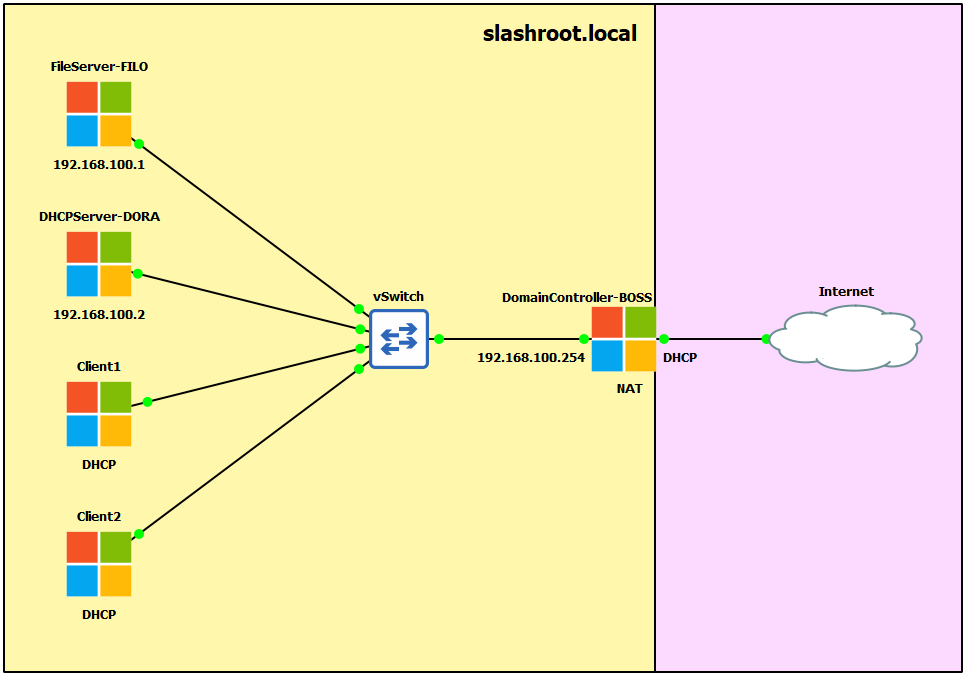
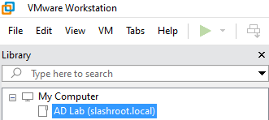
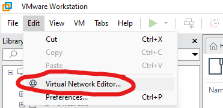
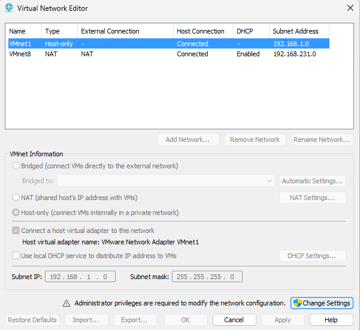
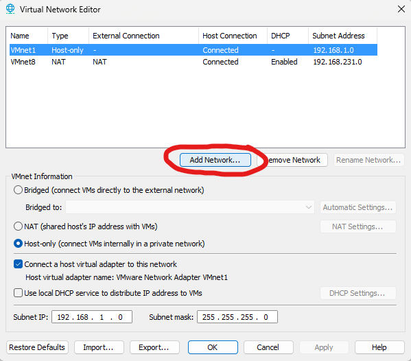
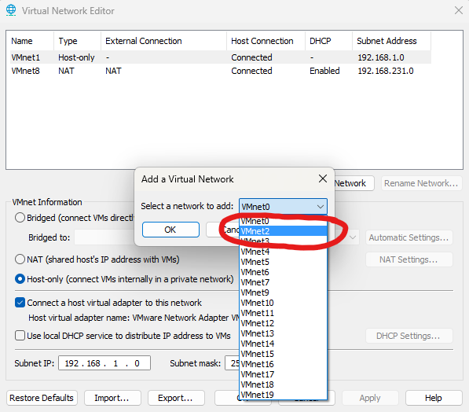
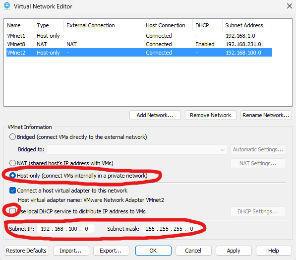
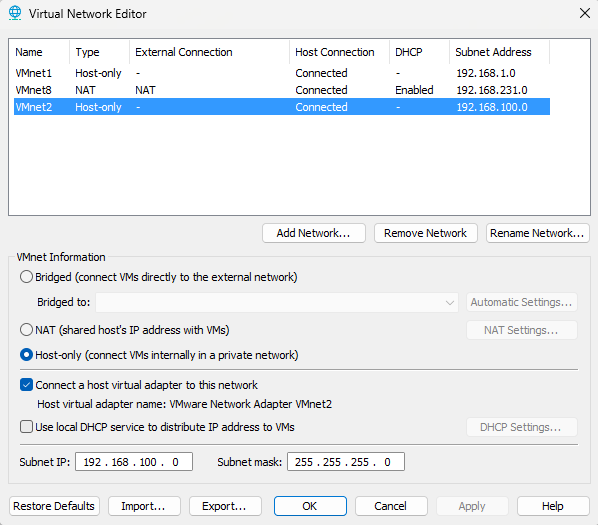
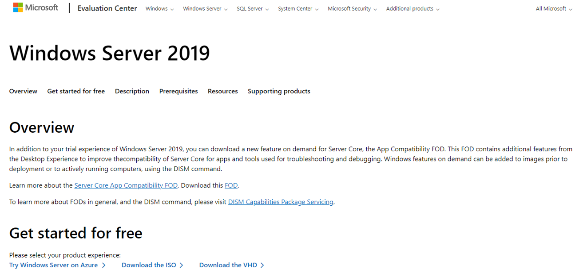
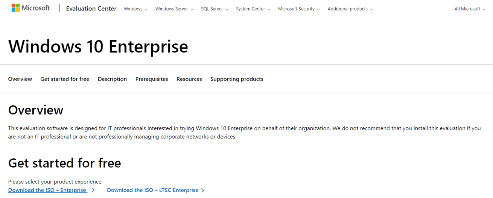

Active Directory Lab Build - Setting up VMware and downloading images
This is the first step in a series of guides on how to build a small Active Directory (AD) environment in VMware Workstation Pro. The purpose of this build is to construct an environment where we can test the vulnerabilities of AD. What we will achieve is the following topology:

- Windows Server 2019 Domain Controller (DC) named BOSS.
- Windows Server 2019 Fileserver named FILO.
- Windows Server 2019 DHCP server named DORA.
- 2x Windows 10 client machines.
IP Schema
The IP schemas used in this lab will be:
- 1x LAN subnet in the 192.168.100.0/24 network.
- The DC will have two network adapters. One being INTERNET and the other being INTERNAL. The INTERNET adapter will be set to DHCP and receive an IP address from the VMware NAT service. This will be connected externally to the internet. The INTERNAL adapter will be be addressed to 192.168.100.254 (this will be our internal DNS server also). We will use the AD routing services to provide internet to our domain through the DC.
- The fileserver will be IP addressed 192.168.100.1.
- The DHCP server will be IP addressed 192.168.100.2.
Setting up VMware
This guide assumes you have downloaded and installed VMware Workstation Pro. I am using VMware Workstation Pro 17 for this guide. To start I am going to create a folder within my VMware to house my domain VMs:

This is not a required step, I just like my VMs organised. Right click 'My Computer' and select 'New Folder' if you do want to follow this step. Next we need to create private isolated network for our domain to sit in. To do this I am going to create a new virtual network with no VMware DHCP service (we are going to have our DHCP server in the domain so do not need this feature from VMware). To create an isolated network segment select 'Edit > Virtual Network Editor'

You will be faced with the following screen (yours may look slightly different, do not worry at this stage):

Select 'Add Network':

From the drop down menu choose a VMnet you are not currently using. I have chosen VMnet2:

Select the VMnet you created, select 'Host-only', untick 'Use local DHCP service...' and enter the IP and subnet you would like to use. Click 'Apply':

Once done, you should have a new VMnet with the following settings:

Again, do not worry if you do not have any others, as long as you can see the single VMnet you just created you are good to go at this step.
Downloading the images
To start building our domain we are going to need some server software. For our lab we are going to use Windows Server 2019 for the servers and Windows 10 for the clients. You can download free evaluation copies of these OS to use in this lab build. You will need to download the Windows Server 2019 evaluation ISO and the Windows 10 evaluation ISO. We will then use these ISO images to install the OS in our VMs.

Download from: Microsoft Windows 2019 Evaluation

Download from: Microsoft Windows 10 Evaluation
Once both have been downloaded, we are ready to start building our VMs.